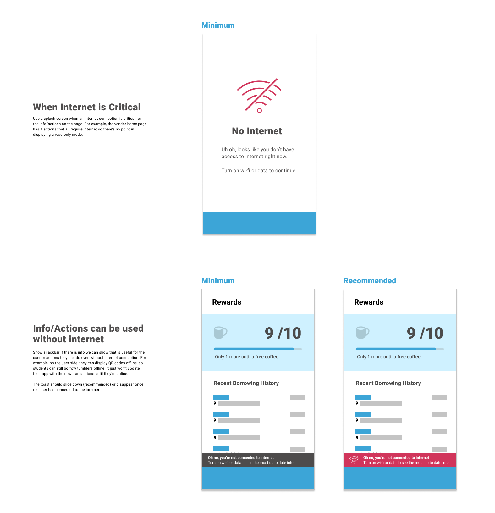
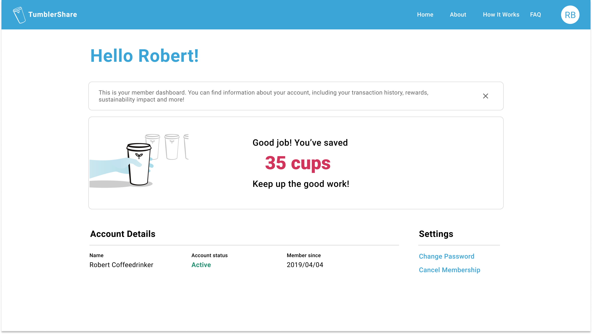

TumblerShare
TumblerShare is a student-led initiative at Simon Fraser University to reduce disposable coffee cup waste on campus by providing students with access to reusable tumblers. I am the lead UX designer for the student-facing experience.
Role
- Creating wireframes and mockups
- Applying user-centered design methods such as personas and user journey frameworks
- Planning and facilitating user testing and research
- Facilitating the product team workflow
Define
Problem Statement
TumblerShare was a primarily paper-based system. Members trade their membership cards in to receive a tumbler at the coffee shop, and return the tumbler to get their membership card back. Sitting down with stakeholders revealed several insights to me about short-term and long-term goals for digitizing the program operations.
Define
Preliminary Research
How are existing member using the program? Why aren’t there more people signing up? How could we help them want to become a TumblerShare member? A survey conducted with 41 non-members and 16 members shed some light on these questions:
- When respondents decide where to buy their coffee, the eco-friendliness of a store was not a major factor compared to location and price.
- When floated the idea of an app that would allow them to sign up online and expand the program to more locations, respondents expressed interest due to the convenience.
- Rewards and points systems were highly valued by members, showing that we needed to keep and highlight TumblerShare’s existing reward system.
“Convenient” was the key word here that I adopted as a primary design principle for the student experience, as it seemed like a major risk factor for app abandonment.
Design
User-Centered Process
I worked with another designer to create empathy maps based on the research data, using affinity diagramming to identify patterns.
Why a mobile app?
It provides members with the freedom to borrow and return tumblers to whichever location is most convenient, rather than the one that has their membership card.
And a website too?
74% of our non-member survey respondants had never even heard of TumblerShare before, showing that we need an accessible entry point into the program. A website made the most sense as a platform to introduce the program in detail and direct people to the mobile app.
Design
Wireframing and planning out interaction flows
Once we had established our target user, our problem statement, and our goal, it was time to start visualizing what our user flow might look like. Whiteboard wireframing allowed another designer and myself to quickly propose and reject possibilities for flows.
Moving into gray box wireframes, I created many versions of screens to quickly test out different interactions and layouts, before selecting the most promising version for user testing.
Refine
Testing early and communicating transparently
Two rounds of user testing, and technical and product requirements from developers and stakeholders, shaped our design into a product that could meet our user’s real needs and be completed by our deadline.
Finding the minimum viable product (MVP)
Reactions from test participants to the information on the home screen ranged from interest to confusion to apathy. To reduce unnecessary information overload and visual distraction, I simplified the home screen to the MVP: borrowing and refilling tumblers.
Balance technical requirements with user needs
I worked with the app developer to understand which features absolutely needed internet, and which did not. Researching common UX patterns and applying them to our use case scenarios allowed me to create usage guidelines which minimize disruption to our user.
Current Design
The current design is streamlined across the app and web, focusing on the most important actions and information to promote member engagement with the program and reduce manual work required from the coffee staff and TumblerShare operations team.
One click to borrow or refill a tumbler
A clear call to action, combined with a single QR code modal ensures speed to avoid holding up the line at busy coffee shops.

Tracking rewards progress
The app keeps track of members’ progress towards a free coffee, erasing the time spent when coffee shop staff had to manually stamp the membership cards.
Correlating program usage with direct impact
Members can see their individual contribution to reducing cup waste on the website, thus promoting continued engagement with the program. In the future, this can be enhanced by potentially introducing social and/or gamified elements and revisiting a better incorporation into the app hierarchy.
Managing the production timeline
With all of our product team members being students in school or on co-op, it was important to manage our production timeline well to meet our deadlines. I took initiative to create and manage a Jira board with our tasks, using it as an organization tool to facilitate product review meetings. This improved transparency and accountability across the team, and ensured important tasks did not fall through the cracks.
Reflection
As my first experience designing and shipping an entire app from scratch, there was a lot of trial and error involved. But these experiences taught me a lot about pivoting quickly, not getting attached to the "perfect" design, and working within technical limitations.
Our product is always being improved, so if you got inspired while reading and have ideas or feedback, don’t hesitate to get in touch or just say hi!
Many thanks to my wonderful team: Corrina Tang (UX/PM), Josh Vocal (app dev), Nihas Nibas (web dev).